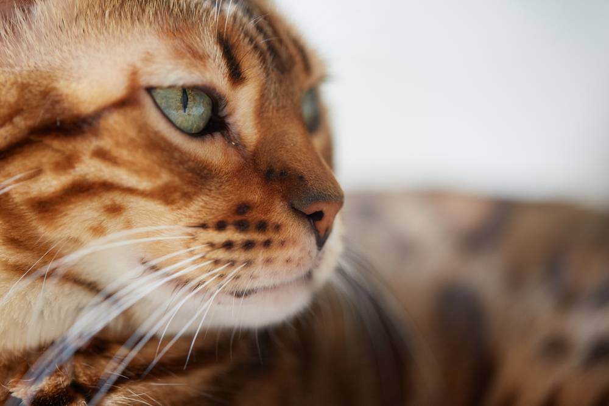

Породы кошек
Вес бенгальской кошки – сколько весят котята и взрослые животные
13 марта 2026
5 минут на чтение
367 просмотров

Эта порода выведена в конце прошлого века в США в результате
целенаправленного скрещивания диких азиатских леопардовых кошек и
домашних питомцев, среди них отмечены египетские мау и животные, не
имеющие родословных. Получившиеся межвидовые гибриды демонстрируют
эффектный пятнистый окрас и достаточно крупный размер.
На то, сколько весит бенгальская кошка, влияет не только ее породная
принадлежность. Большое значение имеют условия, в которых растет и
развивается котенок, питание, состояние здоровья и другие внешние и
внутренние факторы. Поддержание оптимальной массы тела питомца –
важное условие его благополучия.
Сколько весит бенгальская кошка – динамика увеличения роста и веса
Размер котят в период развития меняется быстро, так как они
стремительно взрослеют. У самцов и самок он может заметно отличаться.
Мальчики обычно крупнее девочек с самого рождения, но в первые месяцы
разница не столь очевидна, как у взрослых животных, а в некоторых
случаях вовсе отсутствует, проявляясь только со временем.
| Возраст питомца |
Вес в норме (кг) |
Рост (см) |
|
Мальчики |
Девочки |
Мальчики |
Девочки |
| 1 месяц |
0,3-0,6 |
0,3-0,5 |
9-12 |
8-11 |
| 2 месяца |
0,6-1,2 |
0,5-1 |
11-14 |
10-13 |
| 3 месяца |
1,3-2 |
0,8-1,5 |
13-16,5 |
11-15 |
| 4 месяца |
2,2-3 |
1,2-2 |
17-19 |
13-17 |
| 5 месяцев |
2,5-3,2 |
1,7-2,3 |
19-22 |
15-19 |
| 6 месяцев |
2,9-3,6 |
2,1-2,8 |
21-25 |
17-21 |
| 7 месяцев |
3,3-4,2 |
2,3-3,2 |
22-26 |
19-23 |
| 8 месяцев |
3,5-4,7 |
2,5-3,7 |
23-27 |
20-24,5 |
| 9 месяцев |
3,8-5,2 |
2,7-3,9 |
23,5-28 |
22-26 |
| 10 месяцев |
4,1-5,4 |
2,8-4,1 |
24-29 |
23-28 |
| 11 месяцев |
4,4-5,7 |
3-4,4 |
24,5-30 |
24-30 |
| 12 месяцев |
4,8-6 |
3,3-4,7 |
25-32 |
25-32 |
| 2 года |
5-7 |
3,5-5 |
25-32 |
25-32 |
| 3 года |
5-7 |
3,5-5 |
25-32 |
25-32 |
Важно: Такие
показатели следует считать примерными, поскольку размер котят обоих
полов даже в одном помете может существенно отличаться. Некоторые
особи бывают крупнее среднего, иногда достигая 8 кг и более, стандарт
породы это допускает. Самцы обычно выше и тяжелее самок, но
встречаются и редкие исключения.
От чего зависят рост и вес кошки?
Ключевой фактор, определяющий размер животного, – породная
принадлежность. Если у питомца нет отклонений, его высота и масса тела
не должны выходить за рамки, оговоренные стандартами. Однако у кошек,
в отличие от большинства собак, их границы зачастую бывают довольно
размытыми, поэтому ориентироваться лучше на усредненные показатели.
На вес и рост влияют условия, в которых находится котенок с рождения и
до наступления зрелости, питание, активность, контроль за состоянием
здоровья. Самцы обычно вырастают более крупными, чем самки, но это
необязательное условие.
До скольких месяцев растут бенгальские котята?
Так как порода является крупной, ее взросление протекает относительно
медленно по сравнению с более мелкими. Питомцы достигают максимальной
высоты в холке не позднее года, зачастую это происходит на несколько
месяцев раньше. Однако развитие организма на этом этапе не завершено,
формирование внутренних органов продолжается, поэтому вес бенгальской
кошки может увеличиваться еще некоторое время за счет прироста
мышечной массы. Взрослыми питомцы считаются примерно с 1,5 лет.
Что делать при ожирении или истощении у кошки?
Клинически значимое отклонение веса (10% и более) от нормы
нежелательным образом отражается на здоровье животных. Оно может быть
как симптомом заболевания, так и стимулом к их развитию.
Ожирение во многих случаях является следствием переедания, а не
признаком нарушения здоровья, но негативно влияет на организм,
осложняя работу эндокринной, сердечно-сосудистой, мочевыделительной,
дыхательной систем, желудочно-кишечного тракта и опорно-двигательного
аппарата. Кастрация усиливает склонность животных к полноте, после
этой процедуры необходимо пересмотреть рацион питомца.
Некоторые отклонения, приводящие к значительному снижению массы тела:
-
хроническая почечная недостаточность
- сахарный диабет
-
заболевания полости рта (зубной камень,
гингивит и др.)
-
патологии желудочно-кишечного тракта
- частые стрессы и др.
У котят причиной потери или медленного набора массы нередко бывают
глисты. Исхудание также может оказаться результатом недоедания, но
лишь при неудовлетворительных условиях содержания. Ответственные
хозяева бенгальских кошек следят за их весом.
При незначительных отклонениях допускается самостоятельная помощь, она
заключается в пересмотре рациона. Когда степень ожирения или истощения
достигает клинически значимых показателей, необходима
квалифицированная помощь. В первую очередь требуется обследование для
выяснения причин отклонения.
Как контролировать вес кошки?
Главное, что необходимо для поддержания массы питомца в норме –
правильное питание и достаточный уровень активности. Рацион должен
учитывать не только его размер, но и возраст, а также степень
подвижности. Кастрация требует изменения калорийности корма.
Следить за тем, сколько весит бенгальская кошка, необходимо на
протяжении всей ее жизни. Котята должны правильно и стабильно набирать
массу, у взрослых питомцев в норме она почти не изменяется после
наступления физической зрелости. Любые значительные отклонения
являются поводом для повышенного внимания к состоянию здоровья.
Для контроля прибегают к взвешиванию (дома или в ветклинике) и
визуальному осмотру: у животного с нормальным весом должна хорошо
просматриваться талия, живот не выступает, ребра легко прощупываются
под тонким слоем жировой ткани. Для поддержания физической активности
желательна обогащенная среда, регулярное общение и совместные игры с
кошкой.
Источники:
- Стандарт породы FARUS. Бенгальская кошка.
-
Rowe E., Browne W., Casey R. et al. Risk factors identified for
owner-reported feline obesity at around one year of age: dry diet
and indoor lifestyle, Preventive Veterinary Medicine, 2015.